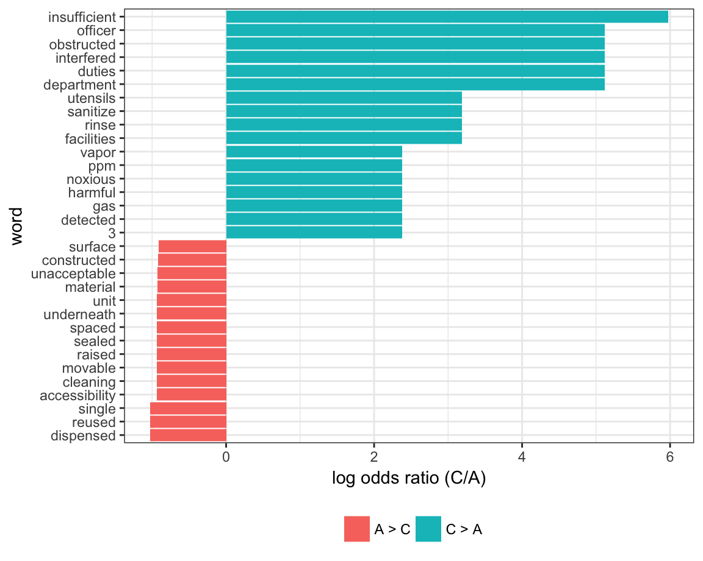
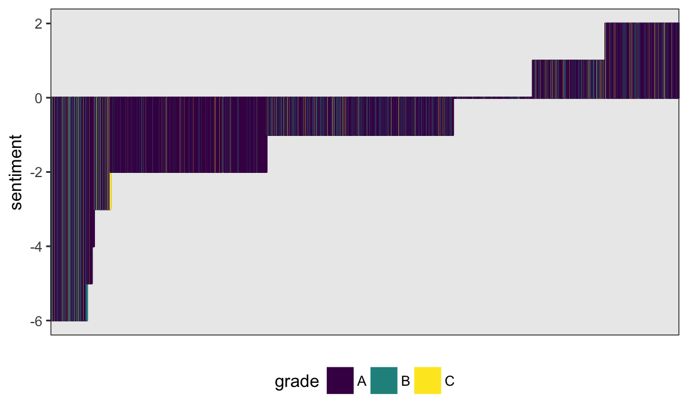

Tidy text
This is a bit of a diversion for a public-health-focused course in data science, but it’s fun, related to web data, strings, and factors, and emphasizes tools in data wrangling.
This is the third module in the Data Wrangling II topic; the relevant slack channel is here.
Example
I’ll write code for today’s content in a new R Markdown document called tidy_text.Rmd, and put it in the same directory / GitHub repo as reading_data.Rmd and strings_and_factors.Rmd. I’m also going to load the usual packages, as well as tidytext and viridis (which has nice color palettes for plots).
library(tidyverse)
library(tidytext)
library(stringr)
library(forcats)
library(viridis)
theme_set(theme_bw())
theme_update(legend.position = "bottom")Data
We’re going to continue our examination of the NYC Restuarant Inspections data. I’ll load this and restrict to data I’m interested in right now.
nyc_inspections = read_csv("./data/DOHMH_New_York_City_Restaurant_Inspection_Results.csv.gz",
col_types = cols(building = col_character()),
na = c("NA", "N/A")) %>%
filter(grade %in% c("A", "B", "C")) %>%
mutate(inspection_num = row_number(),
boro = str_to_title(boro)) %>%
select(inspection_num, boro, grade, score, critical_flag, dba, cuisine_description, zipcode, violation_description)Words and wordcounts
To illustrate tidy text and text analysis, we’ll focus on the violation_description, which are stored as strings. To begin our analysis, we’ll un-nest the tokens (i.e. words) in each row; the result is a tidy dataset in which each word is contained within a separate row.
inspection_words = nyc_inspections %>%
unnest_tokens(word, violation_description)There are lots of words here that are uninformative. We’ll remove “stop words” using anti_join; in other settings the words you wan to remove might be different.
data(stop_words)
inspection_words =
anti_join(inspection_words, stop_words)
## Joining, by = "word"Great! Let’s take a look at the most commonly used (informative) words in this dataset.
inspection_words %>%
count(word, sort = TRUE) %>%
top_n(10) %>%
mutate(word = fct_reorder(word, n)) %>%
ggplot(aes(x = word, y = n)) +
geom_bar(stat = "identity", fill = "blue", alpha = .6) +
coord_flip()
## Selecting by n
Comparing words across groups
Let’s compare which words are more likely to come from a “C” versus “A” inspection grade. We limit to words that appear at least 5 times and compute the approximate log odds ratio for each word.
word_ratios = inspection_words %>%
filter(grade %in% c("A", "C")) %>%
count(word, grade) %>%
group_by(word) %>%
filter(sum(n) >= 5) %>%
ungroup() %>%
spread(grade, n, fill = 0) %>%
mutate(
C_odds = (C + 1) / (sum(C) + 1),
A_odds = (A + 1) / (sum(A) + 1),
log_OR = log(C_odds / A_odds)
) %>%
arrange(desc(log_OR)) We plot the top 15 most distinct words (that is, words that appear much more frequently in one group than the other) below.
word_ratios %>%
mutate(pos_log_OR = ifelse(log_OR > 0, "C > A", "A > C")) %>%
group_by(pos_log_OR) %>%
top_n(15, abs(log_OR)) %>%
ungroup() %>%
mutate(word = fct_reorder(word, log_OR)) %>%
ggplot(aes(word, log_OR, fill = pos_log_OR)) +
geom_col() +
coord_flip() +
ylab("log odds ratio (C/A)") +
scale_fill_discrete(name = "")
A lot of these seem pretty reasonable.
Sentiment analysis
Finally, let’s score the sentiment in each word. We’ll use the “bing” (like Bing Liu, not like bing.com) sentiment lexicon, which simply categorizes each word as having a positive or negative sentiment.
bing_sentiments = get_sentiments("bing")Note this is not perfect for this dataset – for example, this scores cold as negative which might not be accurate – but we’ll use it anyway.
We need to combine this lexicon with our tidy dataset containing words from each inspection. Note that only words that are in the sentiment lexicon will be retained, as the rest of the words are not considered meaningful. We’ll also count the number of positive and negative words in each violation description, and create a score that is the difference between the number of positive words and negative words.
inspection_sentiments = inspection_words %>%
inner_join(., bing_sentiments) %>%
count(inspection_num, sentiment) %>%
spread(sentiment, n, fill = 0) %>%
mutate(sentiment = positive - negative) %>%
select(inspection_num, sentiment)
## Joining, by = "word"We now have sentiment scores for each inspection. We’ll combine these with our original dataset, which had inspections in each row rather than words in each row – the data tidied for text analysis aren’t really suitable for our current needs.
inspection_sentiments =
right_join(nyc_inspections, inspection_sentiments,
by = "inspection_num")Finally, let’s make a plot showing inspection sentiments and grades. This could be a pretty big plot, so I’ll restrict to Manhattan and sample only a few thousand entries.
set.seed(1)
inspection_sentiments %>%
filter(boro == "Manhattan") %>%
sample_n(5000) %>%
mutate(inspection_num = factor(inspection_num),
inspection_num = fct_reorder(inspection_num, sentiment)) %>%
ggplot(aes(x = inspection_num,
y = sentiment, fill = grade, color = grade)) +
geom_bar(stat = "identity") +
theme(axis.title.x = element_blank(),
axis.text.x = element_blank(),
axis.ticks.x = element_blank()) +
scale_fill_viridis(discrete = TRUE) +
scale_color_viridis(discrete = TRUE) 
It’s not clear that sentiment is related to grade; this could reflect the very formal language of inspections or the inappropriateness of our lexicon.
Other materials
- The framework we used is explained in detail in the Tidy Text book
- One of the book’s authors, Julia Silge, has a nice video talking about the work
- The other of the book’s authors, Dave Robinson, used the approach to examine Donald Trump’s tweets in this this blog post
The code that I produced working examples in lecture is here.